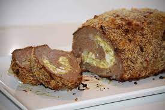

The meat roll to see if you're good enough

This recipe is a little hard because it involves a series of processes that
require some experience in kitchen. You will need:
- Aluminum paper
- 68g of onion powder
- 1kg of ground rump
- 100g of bacon
- 200g of mozzarella cheese
- 200g of ham
- 1 tomato
- Parsely
- Oregano
- Salt
- Black pepper
If you're asking yourself how much salt or pepper you're lying to yourself
that you're ready to do this recipe.
Method of preparation
- Chop the parsley and reserve it.
- Chop the tomato and reserve it.
- Grate de cheese and reserve it.
- Chop the bacon and reserve it.
- Mix the rump, the onion powder, the parsley, the oregano, the salt and
the black pepper in a bowl until become a homogeneus mass.
- With the aid of a wooden roller, press the meat over the aluminum paper
in a rectangular shape. About 1 cm thick.
- Over the meat spread the bacon, the cheese, the ham and the tomato. Let
a space without filling near to the edges of meat. This thing must close.
- Close it with the aid of the aluminum paper (it can't go inside of the
roll meat), then put it in the oven. 518°F for 1 hour must be enough.